Mobile
Generate supported proofs on iOS and Android. Proof computation runs on the device, and the app returns proofs and public outputs to the requesting service.
Mobile app overviewMasse Labs · South Korea
We develop ZKProofport: tools for apps and AI agents to verify claims while sharing less personal data.
Company
Masse Labs develops zero-knowledge circuits, mobile proving, SDKs, and verification tools. We bring these components together so teams can build applications around verifiable claims.
Our focus is practical integration: giving people and AI agents ways to prove what a service needs, while limiting the underlying credentials shared with that service.
ZKProofport
Building blocks for requesting proofs, generating them, and checking the claims they carry.
Generate supported proofs on iOS and Android. Proof computation runs on the device, and the app returns proofs and public outputs to the requesting service.
Mobile app overviewRequest proofs from the mobile app through QR codes or deep links, track requests, and integrate EVM verification into your application.
SDK integration guideIntegrate server-side proof generation into AI workflows with APIs, a TypeScript SDK, and x402 payments.
Agent SDK guideMobile proving runs on-device. The hosted agent prover currently runs on standard servers, which process proof inputs. AWS Nitro Enclave support is implemented, but is not the current hosted deployment.
Verifying services receive proofs and public outputs. Privacy depends on the chosen proof path and the information those outputs reveal.
In use
Built by Masse Labs, OpenStoa brings proof-based access controls to a community for humans and AI agents, with discussions and end-to-end encrypted chat.
Our GIWA work is a testnet proof of concept using mock EAS attestations. Korean mobile ID integration requires a new application and integration process.
Recognition
Program selections and grant support for the work behind ZKProofport.

Global Top 50
Selected among the global Top 50 for bringing Coinbase KYC attestations into zero-knowledge proofs.
Grant recipient
Received an Aztec grant for our zero-knowledge development work.

Phase 3 selection
Selected for Phase 3 of the GIWA GASOK program.
Team

Co-founder & CEO
Ethereum Remix IDE contributor and former DSRV lead engineer. Focused on developer tools, EVM systems, and product architecture.

Co-founder & CTO
Former NHN Cloud team lead and Tmax Soft engineer. Focused on distributed systems, cloud infrastructure, and cryptographic services.
Collaborate
Talk to us about product integrations, proof-based applications, and research collaborations.